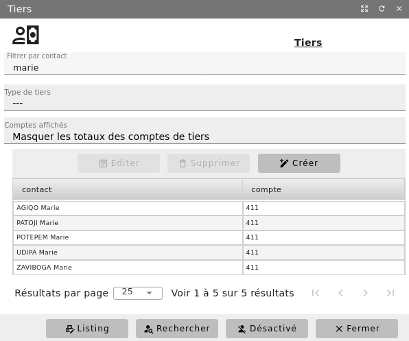
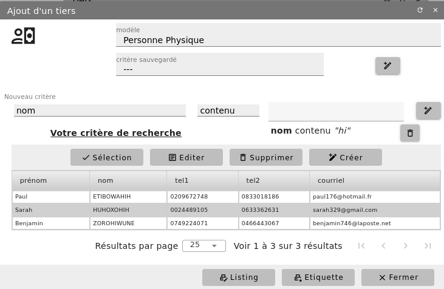
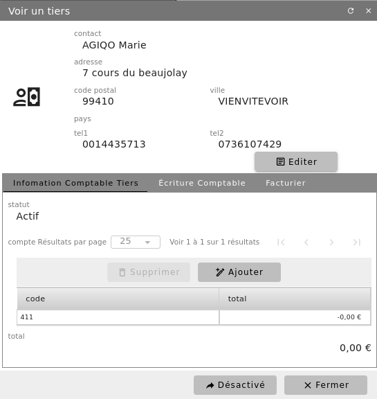
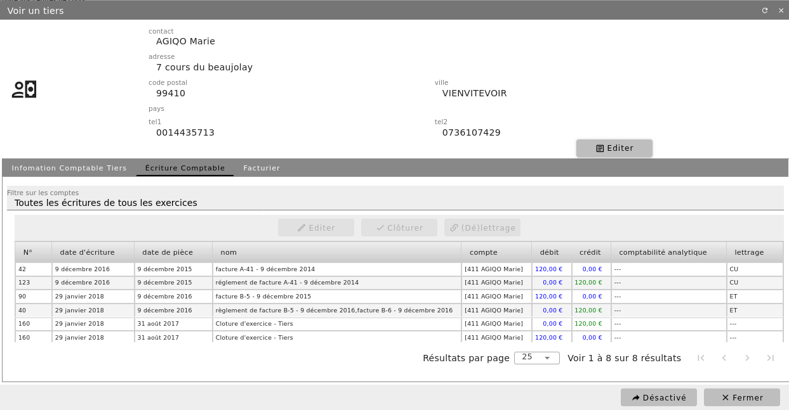

Tiers comptable¶
Préambule : Les opérations réalisées par votre structure avec ses partenaires donnent lieu à des échanges. Les flux physiques (échanges de biens et de services) et les flux monétaires (échanges de monnaie) doivent être constatés en comptabilité.
Pour chacun de vos partenaires, que ce soit des personnes physiques (individus) ou des personnes morales (administrations, associations, sociétés…) vous devez, afin de comptabiliser distinctement les opérations réalisées avec lui, lui ouvrir une subdivision d’un compte général appelé aussi compte auxiliaire (ou compte nominatif).
Exemple : vous achetez régulièrement des fournitures de bureau à la SARL « Papeterie du Centre » dont la gérante est Mme VERGER Louise
- Sous DIACAMMA :
- FonctionGérante –>
- Personne physiqueVERGER Louise
- Personne moralePapeterie du Centre (SARL) avec pour membre VERGER Louise, gérante
Tiers comptable : Papeterie du Centre - Code 401
Création d’un tiers comptable¶
Menu Comptabilité/Tiers


La liste des tiers précédemment enregistrés s’affiche à l’écran. Dans cette liste, notez la présence des membres de votre structure. Vous pouvez filtrer cette liste par contact ou type de tiers et imprimer la liste obtenue.
Pour ajouter un nouveau tiers comptable, cliquez sur « + Créer » et sélectionnez le contact (personne physique ou morale) associé à ce tiers comptable.


Depuis cet écran, vous pouvez aussi créer un nouveau contact à l’aide du bouton « + Créer » avant de le sélectionner.

Il est possible d’associer un tiers comptable à un ou plusieurs comptes comptables : fournisseur, client…. Cela permet en comptabilité de distinguer les opérations selon la nature des échanges que vous avez avec lui.
Situation d’un tiers¶
L’onglet « Ecritures comptables » de la fiche d’un tiers vous donne une vue sur les écritures comptables le concernant, avec possibilité de les filtrer.


Champs personnalisés de tiers¶
Menu Administration/Modules (conf.)/Configuration comptable - onglet « Champ personnalisé de tiers »
Grâce à l’ajout de vos propres champs dans la fiche type de tiers comptable, vous allez pouvoir personnaliser cette fiche. La méthode est similaire à celle utilisée pour personnaliser la fiche des contacts.